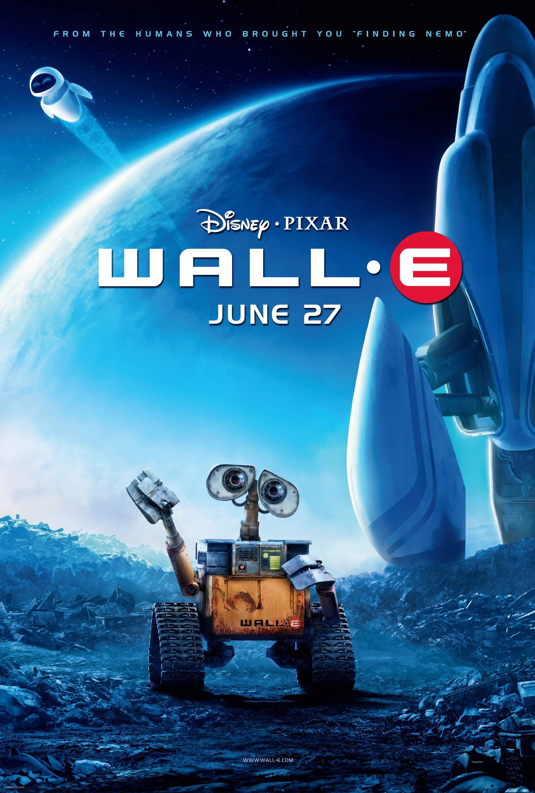

About the Movie WALL-E
The movie Wall-E takes place in a future where the earth and its orbit are covered with trash and pollution. As a result of the waste, this led to humanity largely abandoning the planet under the pretense of a vacation. The cruise to outer space was said to return when the earth was clean, as it was advertised with the phrase, "Too much garbage in your face? There's plenty of space out in space! BNL star lines are leaving each day. We'll clean up the mess while you're away." However, as the movie begins, it becomes clear that the planet will not recover anytime soon. As the main protagonist, WALL-E is the only functioning garbage-collecting robot still active. Despite this fact, WALL-E continues to clean until, one day, a ship lands and drops off a robot named EVE. Where in a string of events, WALL-E will find himself tasked with protecting the last living plant on earth.
Director: Andrew Stanton
Company Credits: FortyFour Studios, Pixar Animation Studios, Walt Disney Pictures
Genres: Animation, Adventure, Family
Release date: June 21,2008
Runtime: 98 min
Rating: G